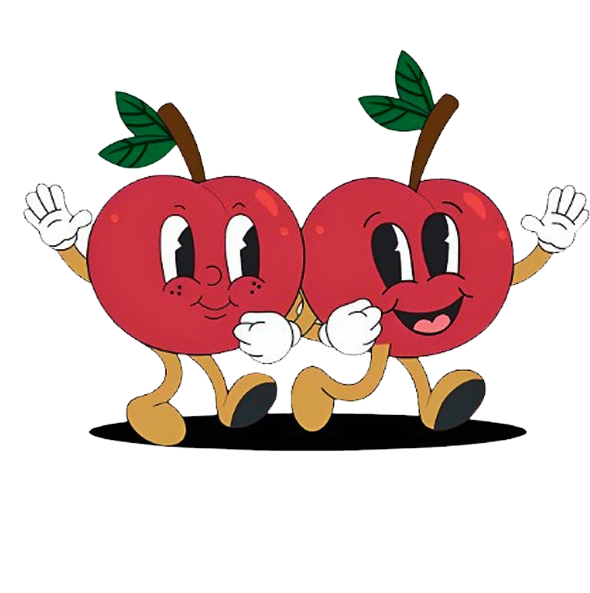
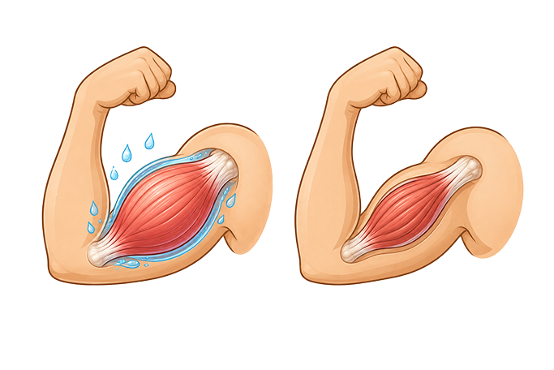

Vida em Movimento
Corpo ativo, mente leve.
Os exercícios físicos fortalecem o corpo e ajudam a prevenir doenças crônicas, como diabetes tipo 2 e hipertensão. A Organização Mundial da Saúde (OMS), agência da ONU responsável pela saúde, recomenda pelo menos 150 minutos por semana de atividade moderada — como uma caminhada rápida — ou 75 minutos de atividade vigorosa, como corrida. Praticados com regularidade, os exercícios aumentam a disposição para o dia a dia e promovem bem-estar físico e mental.


Atividades pré-treino
Preparar o corpo evita lesões.
Antes do treino, é importante fazer um aquecimento — corrida leve, caminhada ou exercícios de mobilidade — para aumentar a temperatura corporal, melhorar a circulação e prevenir lesões. Manter uma boa hidratação também faz diferença: um músculo hidratado responde melhor ao esforço e tem menor risco de cãibras. Vale ainda manter uma alimentação leve antes de treinar, para favorecer o desempenho.
Mais benefícios da atividade física
Além de fortalecer o corpo, os exercícios físicos fazem bem para a mente e para a rotina. Toque em um card para entender o porquê.
-
Melhora o humor
Libera hormônios que trazem sensação de bem-estar.
-
Reduz o estresse
Ajuda o corpo e a mente a relaxarem depois de um dia cheio.
-
Aumenta a disposição
Mais energia para as tarefas do dia a dia.
-
Favorece a concentração
Contribui para clareza mental e foco nas atividades.
Atividade física em números
Entre os adolescentes brasileiros, poucos alcançam o nível de atividade física recomendado para a idade.
Fonte: IBGE, Pesquisa Nacional de Saúde do Escolar (PeNSE), 2019.
No mundo, 81% dos adolescentes de 11 a 17 anos não atingem o nível de atividade física recomendado, segundo a Organização Mundial da Saúde (OMS, 2024) — um desafio global, não só brasileiro.
Minijogo: Ritmo em Movimento
Agora é hora de testar seus reflexos! Acompanhe o ritmo, acerte as setas no tempo certo e tente chegar ao final da barra de energia para conquistar o Emblema Vida em Movimento.
Jogar Agora →Fontes
- Organização Mundial da Saúde (OMS) — Physical activity, ficha técnica sobre atividade física (recomendações e níveis de inatividade no mundo).
- IBGE — Pesquisa Nacional de Saúde do Escolar (PeNSE), 2019, levantamento sobre a saúde de estudantes brasileiros de 13 a 17 anos.